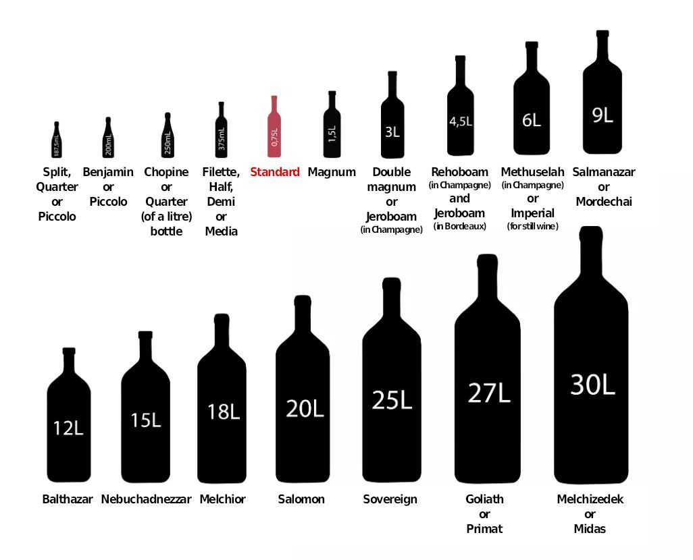
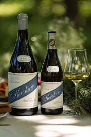
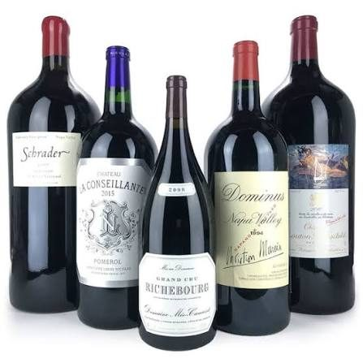
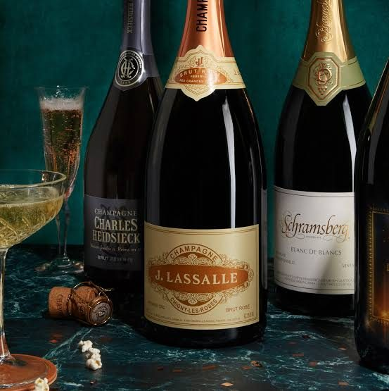
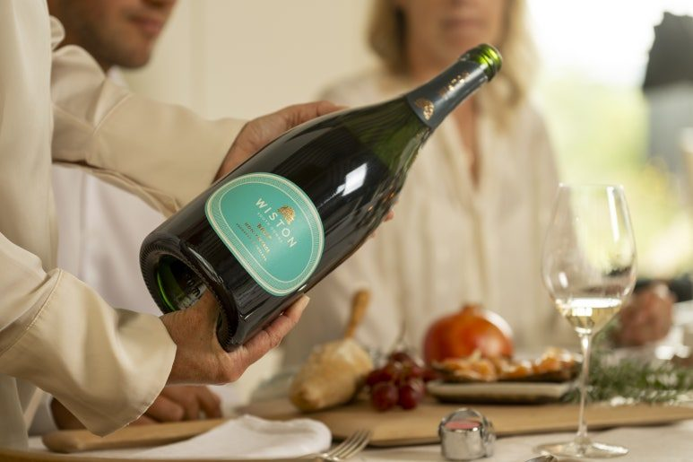

테이블 위의 압도적인 존재감, 매그넘 와인을 선택해야 하는 특별한 이유
와인샵이나 멋진 레스토랑에서 일반 와인병보다 확연히 거대하고 묵직한 존재감을 뽐내는 와인병을 보신 적이 있으실 텐데요. 바로 일반 와인병인 750ml의 정확히 두 배 용량을 자랑하는 1.5L 크기의 매그넘(Magnum) 와인입니다. 단순히 양이 많아서 눈길을 끄는 줄로만 알았던 이 거대한 매그넘 와인에는 사실 와인 애호가들과 평론가들이 열광할 수밖에 없는 아주 흥미로운 과학적 장점과 비밀들이 숨어있답니다. 오늘 아주 자세하고 정성스럽게 매그넘 와인의 진짜 매력을 소개해 드릴게요.
와인샵이나 멋진 레스토랑에서 일반 와인병보다 확연히 거대하고 묵직한 존재감을 뽐내는 와인병을 보신 적이 있으실 텐데요. 바로 일반 와인병인 750ml의 정확히 두 배 용량을 자랑하는 1.5L 크기의 매그넘(Magnum) 와인입니다. 단순히 양이 많아서 눈길을 끄는 줄로만 알았던 이 거대한 매그넘 와인에는 사실 와인 애호가들과 평론가들이 열광할 수밖에 없는 아주 흥미로운 과학적 장점과 비밀들이 숨어있답니다. 오늘 아주 자세하고 정성스럽게 매그넘 와인의 진짜 매력을 소개해 드릴게요.

PART 1. 왜 매그넘 와인이 더 맛있을까요? 과학적인 숙성의 비밀
매그넘 와인은 단순히 파티용으로 양만 늘려놓은 와인이 절대 아니랍니다. 전 세계 유명 와이너리의 수석 양조가들은 똑같은 밭에서 수확한 똑같은 와인이라도 매그넘 병에 담겼을 때 훨씬 더 뛰어난 퀄리티를 보여준다고 입을 모아 말하곤 해요. 여기에는 아주 흥미로운 와인 과학이 숨어있답니다.
그 비밀은 바로 병 속에 갇히는 산소의 비율에 있습니다. 와인을 병에 넣고 코르크로 마감을 할 때, 코르크 바로 아래와 와인 수면 사이에는 아주 미세한 양의 빈 공간이 생기게 되고 여기에는 산소가 갇히게 됩니다. 이 산소는 시간이 흐르면서 와인을 천천히 부드럽게 익혀주는 역할을 하죠. 재밌는 점은 일반 750ml 병이나 1.5L 매그넘 병이나 이 빈 공간에 갇히는 산소의 절대적인 양은 거의 비슷하다는 사실이에요.
이 말은 즉, 매그넘 와인은 액체의 용량은 정확히 두 배로 늘어났지만 산소와 접촉하는 와인의 비율은 일반 병의 절반 수준으로 뚝 떨어진다는 뜻이랍니다. 결과적으로 매그넘 병 속의 와인은 일반 병에 비해 산화 과정이 훨씬 더 천천히, 그리고 아주 우아하고 안정적으로 진행됩니다. 포도 고유가 가진 싱그럽고 신선한 햇과일의 아로마와 활기찬 산미가 오랜 세월 동안 꺾이지 않고 완벽하게 보존되면서, 중심을 잡아주는 탄탄한 구조감과 깊은 풍미를 아주 천천히 완성해 나가게 되죠. 와인의 잠재력을 가장 온전하고 훌륭하게 깨워내는 최고의 숙성 용기가 바로 매그넘 병인 셈이랍니다.
PART 2. 와인 바틀 사이즈 가이드

와인 스타일에 있어서 매그넘은 주로 장기 숙성 잠재력이 뛰어난 프리미엄 레드 와인이나, 정교한 기포를 오래 보존해야 하는 최고급 샴페인 및 스파클링 와인에서 주로 찾아볼 수 있습니다. 시간이 흐를수록 진가를 발휘하는 화이트 와인들도 매그넘 사이즈로 출시되었을 때 그 가치가 어마어마하게 높아지죠.
일반 병보다 온도 변화에 영향을 덜 받는다는 점도 아주 훌륭한 테크니컬 포인트입니다. 병의 두께가 훨씬 두껍고 액체의 양 자체가 많다 보니, 외부의 급격한 온도 변화나 충격으로부터 와인을 아주 단단하게 보호해 줍니다. 와인 셀러 안에서나 이동할 때도 훨씬 안정적인 상태를 유지할 수 있어서 퀄리티를 완벽하게 지켜내기에 최적의 조건을 자랑해요.


PART 3. 왜 일반 병 2개 가격보다 더 비싼 경우가 많을까요?
매그넘 와인을 고르실 때 많은 분들이 가장 궁금해하시는 디테일이 바로 가격에 대한 부분입니다. 산술적으로 생각하면 750ml짜리 일반 와인 두 병을 사는 가격과 1.5L 매그넘 한 병의 가격이 같아야 할 것 같은데, 실제로는 매그넘 와인의 가격이 훨씬 더 비싼 경우가 참 많답니다. 대체 왜 그런 걸까요? 그 이유를 알면 고개가 절로 끄덕여지실 거예요.
첫 번째 이유는 병과 코르크를 만드는 제조 비용 자체가 훨씬 비싸기 때문입니다. 매그넘 병은 단순히 크기만 키운 게 아니라, 거대한 액체의 압력과 무게를 견뎌내야 하기 때문에 일반 와인병보다 유리를 훨씬 더 두껍고 단단하게 특수 제작합니다. 특히 스파클링이나 샴페인의 경우 내부 탄산 압력이 엄청나기 때문에 폭발 위험을 막기 위한 특수 공정이 들어가죠. 코르크 역시 대형 병 입구를 완벽하게 밀봉하기 위해 훨씬 더 크고 최상급의 퀄리티를 가진 통코르크를 엄선해서 사용해야 하므로, 자재비와 제작 공정 비용이 수배로 뛰게 된답니다.
두 번째는 생산 공정의 희소성 때문이에요. 대부분의 와이너리는 모든 자동화 시스템이 스탠다드 750ml 병에 맞춰져 있습니다. 그렇기 때문에 매그넘 와인을 만들 때는 기계를 멈추고 수작업으로 와인을 병입하거나, 아주 소량만을 위해 별도의 수동 라인을 가동해야 하죠. 라벨을 붙이고 캡슐을 씌우는 과정까지 사람의 손길이 직접 닿는 경우가 많아서 인건비와 시간이라는 귀한 리소스가 대거 투입됩니다. 게다가 전 세계적으로 소량만 한정 생산되는 리미티드 에디션 성격이 강하기 때문에 희소 가치에 따른 프리미엄이 자연스럽게 더해지는 것이랍니다.

PART 4. 이런 자리에, 이런 상황에 매그넘을 추천해요
매그넘 와인이 가진 가장 강력한 무기는 어떤 자리든 한순간에 화려한 축제 공간으로 바꾸어버리는 압도적인 비주얼과 상징성입니다. 요즘같이 날씨가 후끈하고 더운 날씨에 수십 명의 게스트가 모이는 야외 파티나 스탠딩 파티, 혹은 중요한 기업 행사와 기업 오픈 이벤트 자리를 준비 중이시라면 매그넘 와인은 선택이 아닌 필수랍니다!
파티 테이블링이나 리셉션 안내 데스크 위에 커다란 매그넘 와인이 얼음이 가득 담긴 대형 버킷에 툭 꽂혀 있는 모습을 상상해 보세요. 맺힌 물방울 사이로 비치는 묵직한 실루엣만으로도 손님들에게 대접받는다는 느낌과 함께 엄청난 시각적 즐거움을 선사한답니다. 수많은 사람들의 잔을 끊임없이 채워주어야 하는 파티 특성상, 일반 와인병을 여러 번 따는 번거로움 없이 매그넘 한 병으로 길게 기분 좋은 흐름을 이어갈 수 있으니 주최 측 입장에서도 정말 신의 한 수가 되어주죠.
뿐만 아니라 소중한 분들의 비즈니스 성공을 기원하는 답례품이나, 결혼식, 창립기념일 등 특별한 세월을 기념하는 선물로 준비했을 때 매그넘 와인의 가치는 더욱 빛을 발합니다. 오랫동안 완벽한 상태로 우아하게 익어가는 매그넘 와인처럼, 우리의 소중한 인연과 비즈니스도 오랜 시간 가치 있게 이어지기를 바란다는 멋진 스토리텔링까지 곁들일 수 있으니 이보다 더 완벽한 센스 만점 선물이 있을까요? 다가오는 소중한 모임이나 특별한 기념일에는 존재감도 맛도 품격도 모두 두 배가 되는 매그넘 와인 한 잔과 함께 더욱 풍성하고 화사한 와인 라이프를 완성해 보시길 바랍니다.

이 글은 땡큐와인 네이버 블로그에 먼저 올린 글이에요.